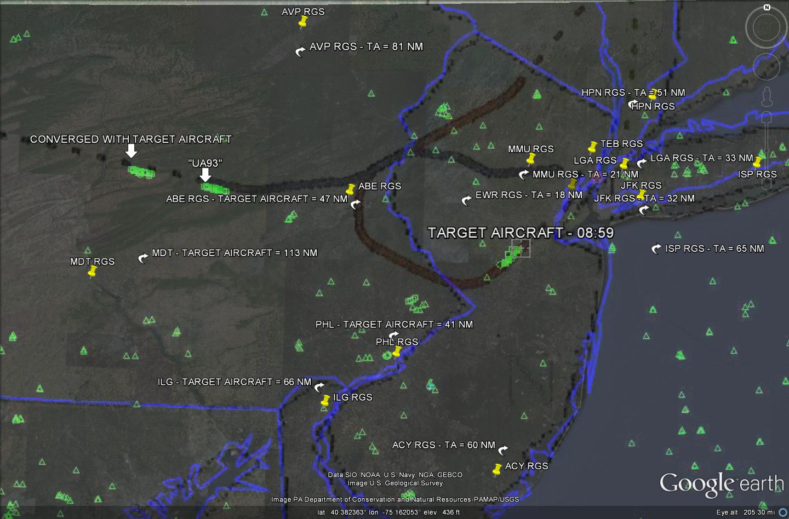

Aircraft Communications Addressing and Reporting System (ACARS) is a device used to send messages to and from an aircraft. Very similar to text messages and email we use today, Air Traffic Control, the airline itself, and other airplanes can communicate with each other via this "texting" system. ACARS was developed in 1978 and is still used today. Similar to cell phone networks, the ACARS network has remote ground stations installed around the world to route messages from ATC, the airline, etc, to the aircraft depending on it's location and vice versa. ACARS Messages have been provided through the Freedom Of Information Act (FOIA) which demonstrate that the aircraft received messages through ground stations located in Harrisburg, PA, and then later routed through a ground station in Pittsburgh, 20 minutes after the aircraft allegedly impacted the South Tower in New York. How can messages be routed through such remote locations if the aircraft was in NY, not to mention how can messages be routed to an aircraft which allegedly crashed 20 minutes earlier? Pilots For 9/11 Truth have briefly touched on this subject in 9/11: Intercepted through the excellent research of "woody", who initially discovered such alarming information in the released FOIA documents(1). We now have further information which confirms the aircraft was not in the vicinity of New York City when the attacks occurred.
These are the 'text' (ACARS) messages in question -
The format for these messages is pretty straight forward. To limit the technical details, we will explain the most important parts of the messages, however, for full Message Block Format codes, click here. The remote ground station (MDT in the message below) used to route the message to the aircraft, the time and date in which the message is sent (09111259, meaning the 11th of Sept, at 1259Z or 0859 Eastern), the flight number (UA175), and the tail number of the airplane in which the message is intended (N612UA), are all highlighted in red.
This message was sent on Sept 11, at 1259Z (8:59AM Eastern) to United Flight 175, tail number N612UA, routed through the MDT remote ground station (Harrisburg International Airport, also known as Middleton).
DDLXCXA SFOLM CHI58R SFOFRSAM
.SFOLMUA 111259/JER
CMD
AN N612UA/GL MDT
- QUSFOLMUA 1UA175 BOSLAX
I HEARD OF A REPORTED INCIDENT ABOARD YOUR ACFT. PLZ VERIFY ALL
IS NORMAL....THX 777SAM
SFOLM JERRY TSEN
;09111259 108575 0543
This message was sent on Sept 11, at 1303Z (9:03AM Eastern, the time of the crash) to United Flight 175, tail number N612UA, routed through the MDT remote ground station (Harrisburg International Airport, also known as Middleton).
DDLXCXA CHIAK CH158R
.CHIAKUA 111303/ED
CMD
AN N612UA/GL MDT
- QUCHIYRUA 1UA175 BOSLAX
- MESSAGE FROM CHIDD -
HOW IS THE RIDE. ANY THING DISPATCH CAN DO FOR YOU...
CHIDD ED BALLINGER
;09111303 108575 0545
This message was also sent on Sept 11, at 1303Z (9:03AM Eastern, the time of the crash) to United Flight 175, tail number N612UA, routed through the MDT remote ground station (Harrisburg International Airport, also known as Middleton).
DDLXCXA CHIYR CH158R
.CHIYRUA 111303/AD
CMD
AN N612UA/GL MDT
- QUCHIYRUA 1UA175 BOSLAX
- MESSAGE FROM CHIDD -
NY APROACH LOOKIN FOR YA ON 127.4
CHIDD AD ROGERS
;09111303 108575 0546
This message was sent on Sept 11, at 1323Z (9:23AM Eastern, 20 minutes after the time of the crash) to United Flight 175, tail number N612UA, routed through the PIT remote ground station (Pittsburgh International Airport).
DDLXCXA CHIAK CH158R
.CHIAKUA DA 111323/ED
CMD
AN N612UA/GL PIT
- QUCHIYRUA 1UA175 BOSLAX
- MESSAGE FROM CHIDD -
/BEWARE ANY COCKPIT INTROUSION: TWO AIRCAFT IN NY . HIT TRADE C
NTER BUILDS...
CHIDD ED BALLINGER
;09111323 108575 0574
If one references the full message block codes linked above, you will notice that a "Technical Acknowledgement" section should be present in ACARS messages. What this means, is that the ACARS system can confirm if the sent 'text' messages have been received or not without requiring any crew input to manually acknowledge the message was received. Similar to an email which may have bounced back, or your cell phone telling you that your text message failed to send, this automatic technical acknowledgement would let the reader know the message failed receipt, or if it were received. An ACK or NAK should be present denoting received or failed, respectively. Unfortunately, these codes are not available in the above messages. However, the 9/11 Commission has stated which messages have been received by the aircraft. According to a Memorandum For The Record (MFR), four ACARS messages were sent between 8:59AM and 9:03AM on the morning of Sept 11, to United Flight 175. The MFR reads as follows(2) -
1259:19Z A dispatcher-initiated message that reached the plane but not crew acknowledged stating "I heard of a reported incident."
1259:29 Additional dispatcher-initiated message
1259:30 Additional dispatcher-initiated message
1303:17 Rogers-initiated message not received by the aircraft
The first message at 1259:19Z, as stated, was received by the aircraft, but not crew acknowledged, which is not required as technical acknowledgements are automatic. This is referring to the message noted above sent through MDT by Jerry TSEN (First coded ACARS message at top). The second (1259:29Z) and third messages (1259:30Z) referenced in the MFR were not provided through the FOIA. The last message (1303:17Z) referenced in the MFR is claimed to not have been received by the aircraft according to the 9/11 Commission. However, all we have is their word, as Technical Acknowledgement codes are not present in the ACARS messages provided through the FOIA. The coded Rogers initiated ACARS message is included above, third from the top. Of course, the 9/11 Commission cannot admit if the last message was received by the airplane as that would immediately indicate to anyone that the airplane did not crash into the South Tower at 09:03 AM.
The last message sent at 9:23AM, routed through Pittsburgh, has been completely ignored by the 9/11 Commission. Although important to know whether the messages were received, it is more important to understand how they are routed, received or not.
ACARS Networks are based on ARINC Standards for communications in the United States. ARINC is a provider of the communication protocol for ACARS networking. As ACARS networks are to Cell Phones, think of ARINC as perhaps a Verizon or AT&T. When a message is sent from the aircraft, or the ground, the message needs to be routed through remote ground stations as described above. Many remote ground stations (RGS) are located throughout the world. Here is a diagram of some of the stations located in the Northeast USA.
Comprehensive List Of ACARS Remote Ground Stations Worldwide - scribd source link - Page 100
If you get on an airplane in say Chicago, headed for NY, you turn off your cell phone and off you go. When you arrive in NY, you turn on your cell phone and see you have a message waiting. Was this message routed through a cell tower in Chicago? No, you would never receive it, nor be alerted that you have a message waiting. It is routed through a cell tower in NY. How does the cell network know where you are?
Although not exactly the same, but similar to how cell phones track your phone based on location, choosing the best cell towers to route messages to your phone, ACARS networks track the aircraft in flight and know where the aircraft is in order to route messages to the aircraft (or vice versa) through the best remote stations on the ground. When a message is sent from the ground or in flight, it is routed through a Central Processing System. This system determines the best routing to a ground station based on the aircraft location. Two types of flight tracking (or flight following) protocols are used for this process. Category A and B.
First is Category A. This type of flight following uses Flight Tracking messages automatically sent from the aircraft, typically every 10 minutes. These messages are a data link and do not contain any text, therefore the customer airline does not receive these messages, they are used for Flight Tracking purposes only. When the Flight Tracking message is sent, the Central Processing System (CPS) recognizes which stations it has been sent through and picks the three best stations for routing messages to and from the aircraft. After roughly 10 minutes, another Flight Tracking message is sent from the aircraft, through a new set of ground stations in the vicinity of it's new location, and the Central Processing System dumps the old stations and replaces it with new stations better for routing messages to the aircraft. This process continues throughout the flight automatically.
The second type of Flight Tracking, Category B, is a bit more simple. The aircraft continuously monitors all stations as it travels on it's course. The Central Processing System continuously chooses the best station for routing purposes while the aircraft is in flight. If the flight plan route is amended in flight, and a diversion is necessary, the Central Processing System chooses a new remote ground station along the diverted flight path based on this flight tracking protocol, tracking the aircraft.
The reason for this type of flight tracking, Category A and B, is due to the fact aircraft divert from their flight plans all the time. Some have argued that MDT and PIT were chosen for routing due to the original planned route of flight, BOS to LAX. However, if ACARS routing was based on original flight planned route, aircraft diverting from their original route of flight would not be able to communicate via ACARS as they would quickly leave the areas in which remote ground stations have been chosen, rendering the network useless for the airline, and most importantly, the aircraft. On 9/11 especially, many aircraft were diverted from their original flight plans. If the ACARS network was solely based on flight planned route, 100's if not thousands of aircraft, would not have been able to communicate with their company and/or ATC. Chaos would have ensued, and the skies would never have been cleared as quickly as reported.
These are the ACARS remote ground station locations as compared with the flight path of United 175, including the diversion from the flight planned route due to the alleged "hijacking". An overlay of the RADES Radar data, also provided through FOIA, has been included to show the location of the Target Aircraft (TA) for the time when the first message was sent through Harrisburg. PA (MDT) and received by the aircraft, at 08:59:AM.
.
Distances from the Target Aircraft to the relative Remote Ground Stations (RGS) are included.
As you can see, there are many stations surrounding the Target Aircraft which are much closer to the aircraft than MDT out in Harrisburg, PA. Twelve stations to be exact,
1. ABE
2. EWR
3. MMU
4. JFK
5. LGA
6. TEB
7. PHL
8. HPN
9. ISP
10. ILG
11. ACY
12. AVP
All of which are nearly half the distance to the Target Aircraft than MDT is presently at 08:59 AM.
There is no possible reason for the Central Processing System (CPS) to have chosen MDT for routing purposes based on Flight Tracking protocol described above, if this Target Aircraft truly were United Flight 175, N612UA. The twelve other stations would have had to been skipped over, and for some reason the CPS chose MDT. One argument is that all those other stations were "congested" at the time which is why the CPS chose MDT. First, in order for this to be true, all those stations would have to be "congested" at least four times over. As demonstrated by the MFR referenced above, as many as 4 messages were routed through MDT. What are the odds that all 12 ground stations were congested each and every time? However, this argument is moot as when the CPS determines the best ground station based on flight tracking protocol, the message is placed into a queue and then sent in the order it was received. ACARS messages are not very large in terms of bytes. Multiple messages can be sent in less than a second. It is logical to queue the messages at a remote ground station which is closer to the aircraft than to route a message through a ground station much further away in which the aircraft may not receive based on distance and altitude. Ground stations can send messages up to 200 miles, but this is only guaranteed if the aircraft is above 29,000 feet, as stated in the MFR referenced above.
When asked how the ACARS network chooses a Remote Ground Station for routing messages to an aircraft, FDR, Radar, ACARS Expert and Electrical Engineer Dennis Cimino had this to say,
The aircraft are constantly in contact with whatever ground station is nearest to it. more or less in 'data link' mode, sending acknowledgements back and forth. In cases where multiple stations on the ground are within range, the dropped packet numbers decide which ground station gets the priority. not as sophisticated as N.T.D.S. (naval tactical data systems) but pretty close to that.
On a more 'system' level, the ground stations are more or less in spread spectrum constant transmit mode like cell phones now use, so they won't step on each other continually. when an aircraft receiver's MDS (minimum discernible signal) sensitivity is achieved or reached out of the 'tangential' noise floor level, the aircraft's receiver then begins to try to data frame sync with the ground. then once that happens and two way 'ping pong' as data link persons refer to it, happens, then any queued messages get shipped to the receiving system and data relative to the aircraft's flight get sent back down to the ground.
This corroborates the Flight Tracking Protocol as outlined above based on a July 2002 Newsletter published by ARINC titled The Global Link(3).
Now that it is understood there were many ground stations which should have been chosen by the CPS before routing messages through MDT, why would the Central Processing System ever choose PIT as the next ground station for routing purposes if the aircraft was being tracked by the ACARS network to NYC? The answer is, it wouldn't.
Further corroboration comes when an ARINC Expert was contacted in San Francisco. When told about the ACARS message being routed through PIT after the airplane had already allegedly crashed into the South Tower, this is what she had to say -
"There is no way that message would be routed through Pittsburgh if the airplane crashed in New York City"
The keyword here is "routed". This ARINC expert feels the ACARS messages may be fake. Pilots For 9/11 Truth were not given permission to use her name. It is possible all messages can be fabricated, but that would attract multiple felony charges as well.
Pilots For 9/11 Truth encourage readers to contact an ARINC Specialist in your area to confirm or refute the above evidence offered. Contact information for an ARINC office near you can be located through a simple google search. Feel free to direct them to this site and article.
Based on Flight Tracking protocol, the only reason the Central Processing System would choose to route messages through the ground stations located at MDT, then later PIT, over the numerous ground stations much closer and surrounding NYC, is due to the aircraft being in the vicinity of MDT, and then later, PIT. This means that the aircraft observed to strike the south tower, was not United 175. Occam's Razor comes to mind here.
This evidence strengthens previous evidence uncovered by Pilots For 9/11 Truth that a standard 767 cannot remain in control, stable or hold together at the speeds reported by the NTSB for the South Tower aircraft(4). So, if UA175 was somewhere out in Pennsylvania when an aircraft was observed to strike the south tower, and a standard 767 cannot perform at such excessive speeds as reported, then where did the aircraft come from which was observed to strike the South Tower? That is a great question and the reason we are still here after 10 years attempting to get answers for the day that changed our world. Send this evidence to your Congress Representative, your Senators, Judges, Lawyers, show your pilots when taking a flight. Call into talk shows, tell them about this evidence. Grab our DVD's and make copies, hand them to friends, family, co-workers, etc. Demand a new investigation into the events of 9/11. The 9/11 Families, The 9/11 Victims, The American People, The World, deserves the to know Truth about what happened on September, 11, 2001.
Founded in August 2006, Pilots For 9/11 Truth is a growing organization of aviation professionals from around the globe. The organization has analyzed Data provided by the National Transportation Safety Board (NTSB) for the Pentagon Attack, the events in Shanksville, PA and the World Trade Center Attack. The data does not support the government story. The NTSB/FBI refuse to comment. Pilots For 9/11 Truth do not offer theory or point blame at this point in time. However, there is a growing mountain of conflicting information and data in which government agencies and officials refuse to acknowledge. Pilots For 9/11 Truth continues to grow and exist only through your continued support. We thank you!
(1) Team7_Box13_UAL_ACARS.pdf - 12.9mb pdf
(2) Miles_Kara_MFR.pdf - 681kb pdf
(3) GLOBAL_LINK.pdf - 174kb pdf
(4) 9/11: Speeds Reported For World Trade Center Attack Aircraft Analyzed - http://pilotsfor911truth.org/wtc_speed
{kind=link}
{kind=link}